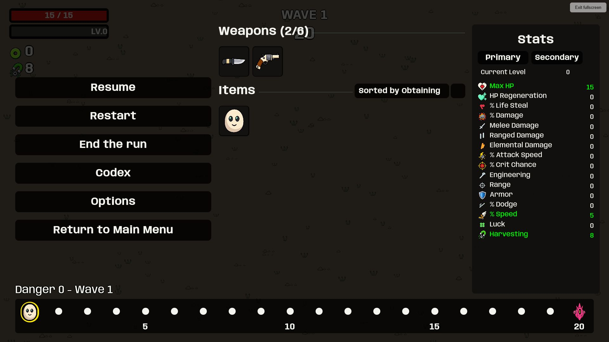
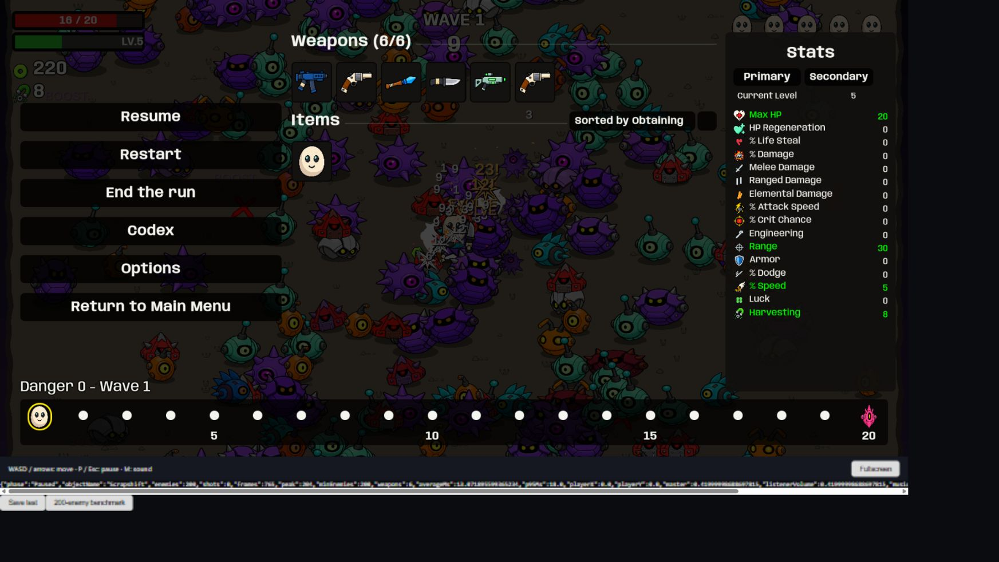

Scrapshift · Browser release
Play local release · Browser ZIP · Full test notes
Ready for desktop-browser testing
- 36.52 MB output — 12.94% smaller than the first Web build.
- 302/302 regression tests; release build: zero warnings/errors.
- Progression and volume survive reload; music starts at the first run.
- Keyboard controls, pause, fullscreen, and canvas focus handling checked.
- 200+ enemies and six weapons: 13.07 ms average frame time; 18 ms p95.
Measurements are from the local Chromium browser on this PC. Other browsers and an actual itch.io embed remain untested. No page has been published.
Release fullscreen and pause

Sustained crowd test

Frame-time results · Browser checks · Size breakdown